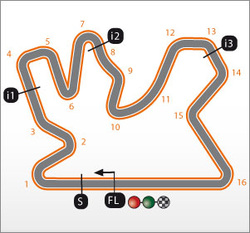

Piste

Losail Circuit-Katar
| Dolžina: | 5.380 km |
|---|---|
| Širina: | 12m |
| Levi zavoji: | 6 |
| Desni zavoji: | 10 |
| Najdalša ravnina: | 1.068 m |
| Zgrajena: | 2004 |
Americas-ZDA
| Dolžina: | 5.513 km |
|---|---|
| Širina: | 15m |
| Levi zavoji: | 11 |
| Desni zavoji: | 9 |
| Najdalša ravnina: | 1.200 m |
| Zgrajena: | 2012 |
Red Bull-argentina
| Dolžina: | 4.806 km |
|---|---|
| Širina: | 16m |
| Levi zavoji: | 5 |
| Desni zavoji: | 9 |
| Najdalša ravnina: | 1.076 m |
| Zgrajena: | 2008 |
Mugello-Italija
| Dolžina: | 4.185 km |
|---|---|
| Širina: | 13m |
| Levi zavoji: | 4 |
| Desni zavoji: | 9 |
| Najdalša ravnina: | 674 m |
| Zgrajena: | 1966 |
Jerez - Španija
| Dolžina: | 4.806 km |
|---|---|
| Širina: | 16m |
| Levi zavoji: | 5 |
| Desni zavoji: | 9 |
| Najdalša ravnina: | 1.076 m |
| Zgrajena: | 2008 |
TT Asen-Nizozemska
| Dolžina: | 4.727 km |
|---|---|
| Širina: | 12m |
| Levi zavoji: | 5 |
| Desni zavoji: | 8 |
| Najdalša ravnina: | 1.047 m |
| Zgrajena: | 1991 |
Le Mans - Francija
| Dolžina: | 4.423 km |
|---|---|
| Širina: | 11m |
| Levi zavoji: | 5 |
| Desni zavoji: | 8 |
| Najdalša ravnina: | 607 m |
| Zgrajena: | 1986 |
Circuit de Catalunya
| Dolžina: | 5.245 km |
|---|---|
| Širina: | 14m |
| Levi zavoji: | 6 |
| Desni zavoji: | 9 |
| Najdalša ravnina: | 1.141 m |
| Zgrajena: | 1974 |
Sachsenring - Germany
| Dolžina: | 4.542 km |
|---|---|
| Širina: | 14m |
| Levi zavoji: | 6 |
| Desni zavoji: | 12 |
| Najdalša ravnina: | 487 m |
| Zgrajena: | 1955 |
Laguna Seca - ZDA
| Dolžina: | 3.671 km |
|---|---|
| Širina: | 12m |
| Levi zavoji: | 10 |
| Desni zavoji: | 3 |
| Najdalša ravnina: | 700 m |
| Zgrajena: | 1996 |
Indianapolis Motor-ZDA
| Dolžina: | 4.170 km |
|---|---|
| Širina: | 16m |
| Levi zavoji: | 10 |
| Desni zavoji: | 6 |
| Najdalša ravnina: | 872 m |
| Zgrajena: | 1909 |
Silverstone–VB
| Dolžina: | 5.900 km |
|---|---|
| Širina: | 17m |
| Levi zavoji: | 8 |
| Desni zavoji: | 10 |
| Najdalša ravnina: | 770 m |
| Zgrajena: | 1948 |
Misano-San Marino
| Dolžina: | 4.226 km |
|---|---|
| Širina: | 14m |
| Levi zavoji: | 6 |
| Desni zavoji: | 10 |
| Najdalša ravnina: | 770 m |
| Zgrajena: | 1969 |
Aragón-Španija
| Dolžina: | 5.078 km |
|---|---|
| Širina: | 15m |
| Levi zavoji: | 10 |
| Desni zavoji: | 7 |
| Najdalša ravnina: | 968 m |
| Zgrajena: | 2009 |

Motegi-Japonska
| Dolžina: | 4.801 km |
|---|---|
| Širina: | 15m |
| Levi zavoji: | 6 |
| Desni zavoji: | 8 |
| Najdalša ravnina: | 762 m |
| Zgrajena: | 1977 |

Philip Island - Avstralija
| Dolžina: | 4.448 km |
|---|---|
| Širina: | 13m |
| Levi zavoji: | 7 |
| Desni zavoji: | 5 |
| Najdalša ravnina: | 900 m |
| Zgrajena: | 1956 |
Sepang-Malezija
| Dolžina: | 5.548 km |
|---|---|
| Širina: | 25m |
| Levi zavoji: | 5 |
| Desni zavoji: | 10 |
| Najdalša ravnina: | 920 m |
| Zgrajena: | 1998 |
Valencia-Španija
| Dolžina: | 4.005 km |
|---|---|
| Širina: | 12m |
| Levi zavoji: | 9 |
| Desni zavoji: | 5 |
| Najdalša ravnina: | 874 m |
| Zgrajena: | 1999 |